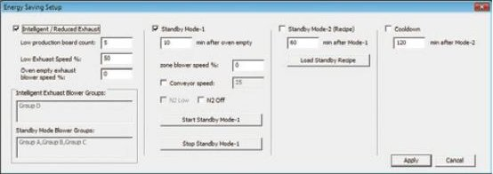

MK7 series Reflow Oven
This new reflow oven platform revolutionizes the industry with several new ground breaking designs and incorporates all of the customer requests for lower Delta T, reduced nitrogen consumption and extended PM into a new low height package that makes it easy to see across the production floor.
We invite you to visit any of our three locations to run profiles and gather DATA for yourself to see the strong advantages of the MK7 reflow oven for your production! Or if you prefer, send us your toughest pcb and we will run reflow soldering profiles and generate the data for you. We are happy to work with you to custom configure your reflow oven machines to suit your needs.
- Highest Yield Reflow Oven
- Lowest Delta T on the board
- Lowest Nitrogen & Electrical Usage
- Maintenance Free
- VOID Free Reflow Oven – with Vacuum option
- Industry 4.0 Compatibility
Reflow Oven w/New Low Height Top Shell
The new low height top shell provides much easier access for reflow oven operators. All skins have double insulation to save up to 10-15% in reflow soldering energy loss.
INDUSTRY 4.0 Compatible Reflow Oven
Internet of Manufacturing (IoM) — Smart factories, intelligent machines and networked processes through the use of cyber-physical systems. Enhanced low height heater module provides the lowest Delta Ts on the reflow oven with better air flow and uniformity! The Uniform Gas Management system eliminates “net flow” which results in nitrogen consumption reductions of up to 40%! New semi-circular heater is more robust and efficient with much longer lifetime.
Revolutionary Flux Management System
Our reflow oven has a revolutionary flux collection system that traps the flux in collection jars which can be easily removed and replaced while the reflow soldering oven is running – saving time consuming P.M. The new flux filtration box also has no risk of flux clogging for a longer-term P.M. interval. Additionally, our proprietary Flux-Free Grill system limits the flux residue on the cooling grills giving the Heller reflow oven system the highest production yields of any oven!
Reflow Oven With Programmable Cooling
Reflow Oven Energy Management Software
Reflow Oven CPK
Heller provides a dynamic 3 tiered system (Tier 1: Reflow Oven CPK, Tier 2 Process CPK, Tier 3 Product Traceability) enabling customers to quickly improve product quality and yield while reducing costs. And the additional benefits of automatic record keeping and recall provide customers with the peace of mind that all reflow soldering process parameters are under control and within spec.